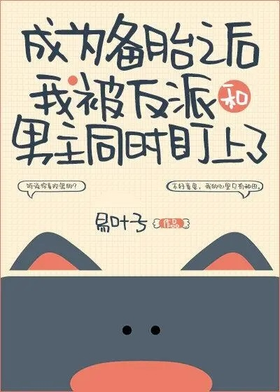

Xu Chenghao transmigró accidentalmente en un libro y se convirtió en la rueda de repuesto de por vida de la protagonista femenina Mary Sue.
Lo que es más frustrante, transmigró en el momento en que la llanta de refacción y el villano se enfrentaron y es una pelea de inmediato.
Lo que es aún más frustrante, según la trama, después de que la rueda de repuesto salva a la protagonista femenina del villano, ella se arroja a los brazos del protagonista masculino y llora en el siguiente segundo.
Cuando llega el momento, la protagonista femenina lo abandona, el hombre desconfía del villano y lo odia. Morirá muy miserablemente.
Xu Chenghao: "... ¡Ven, ven, ven, por favor quítate tu protagonista femenina!"
Protagonista femenina: “??? ¿Dices que me amas por el resto de tu vida y nunca me dejas ir?
Xu Chenghao: "Lo siento, me gustan los hombres".
Protagonista femenina: "..."
Un mes despues,
El villano y el protagonista masculino corrieron a su campo al mismo tiempo y preguntaron: "¿Escuché que te gustan los hombres?"
Xu Chenghao: "..."
Miró a los dos hombres frente a él y dijo: "Lo siento, solo tengo la agricultura en mi corazón".
Los dos: "…"